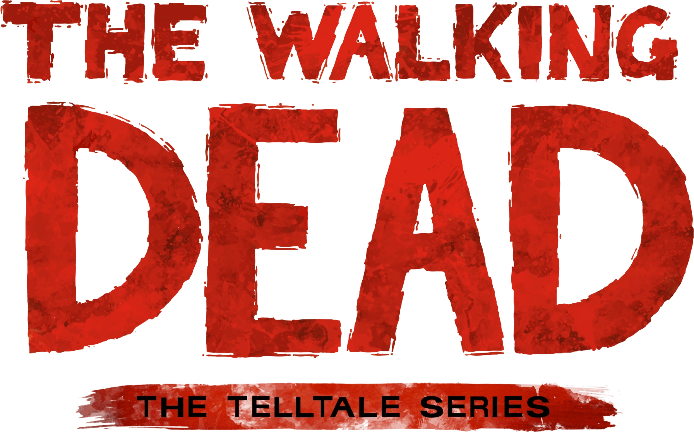

Back when i was a kid around 2012 I spent a lot of my time either playing videogames
or watching youtube. One of the earliest horror type games I decided to watch was
Telltale's 'The Walking Dead' and I loved every bit of it. From the characters to
the choices, the setting, tone, artstyle and performances I thought all of
it was really interseting, especially because of my age and it being one of the first
times I got to experience watching a game like that. Around the time the sequel came
out I was able to play through it on my own with my own console and I did the same
with the rest of the series.
After I found out about the game I quickly found out more about the show. I heard
and read great things about it but for some reason it took me a long time to sit
down and watch it. I finally sat down to give it the time for me to watch through
every season up until that point. I think that the reason I finally gave it a go
was because of one of my friends from school had just finished playing through
the games. We talked about the different choices and outcomes from our playthoughs
and after that we both said we'll watch through the show and talk about it like
we were watching it as if it was airing for the first time.

| Season | Release Date | |
|---|---|---|
| 1 | 31/10/2010 | |
| 2 | 16/10/2011 | |
| 3 | 14/10/2012 | |
| 4 | 13/10/2013 | |
| 5 | 12/10/2014 | |
| 6 | 11/10/2015 | |
| 7 | 23/10/2016 | |
| 8 | 22/10/2017 | |
| 9 | 07/10/2018 | |
| 10 | 06/10/2019 | |
| 11 | 15/08/2021 |
I think that the first 7 seasons of the show are some of the greatest seasons of television ever made and released. The characters, plots, tone, atmosphere, music choices, characters actions, their consequences, and just the shear brutality of the world is excellent. As weird as it might sound for a gory horror show it became my comfort show if you wanna call it that for a while. Even after finishing all of it I went back and rewatched a lot of my favourite episodes and arcs.
Here are some of my rankings of the best seasons, episodes and charachters from the show From my own personal opinion.
Here are some links to other bits of media relating to The Walking Dead that I find fascinating and I hope you do too